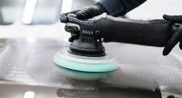
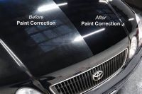

Paint Correction
Paint correction is the act of using mainly a machine polisher along with a multitude of different pads and polishes/compounds to slowly remove any scratches or swirls in the paint. These scratches and swirls are usually easier to see when the paint is in direct sunlight. Sometimes, a scratch is too deep for a machine polisher to remove, so detailers may differ to wet sanding followed by a machine compound and polish. There are different levels of paint correction such as a paint enhancement, a 1-Step Polish, a 2-Step Polish, and wet sanding. However, each correction typically costs different prices, and some can take up to double, even triple the time to complete the entire correction. It is also important to look into a detailers results in order to see if what they are able to produce will match what you as the customer are expecting.
Paint Enhancement
The goal of a paint enhancement is to remove the top layer of clear coat that is faded from sun damage, in order to create a "glossy" effect on the paint. Typically a person can expext from 5-10% of scratch removal. When getting a paint enhancement, you should not be expecting a massive difference from what the previous state of the paint is. A detailers goal in performing a paint enhancement is to not remove scratches, but brighten up the car by removing old and faded layers of clear coat. Typically, this service is the least expensive paint correction that is available, but often reguarded to as the most cost effective option.
Like all services, but paint corrections in specific, it is important to talk with your detailer and see what is possible to achieve on your vehicle as well as set the bar for any expectations you should have with the finished result. Lastly, just like any paint correction or detail for that matter, it is important to protect the paint after you are done correcting it. This will help preserve the current finish and shine of the clear coat, as well as protect from micro-scratches that are put in clear coat from everyday use.
1-Step Paint Correction
A 1-Step paint correction is when a detailer uses one pad and one polish or compound to remove as many scratches in the paint as possible, without switching pad or polish/compound. The goal of a 1-Step paint correction is to remove as many scratches from the clear coat, while still being relatively cost-effective. Customers looking to get a 1-Step paint correction can typically expect anywhere from 30-70% of scratch removal.
As with any detailing service, it is even more important to talk to your detailer about what your expectations should be with the finshed correction. When you start to get deeper and deeper into correcting (chasing perfection), a detailer may notice some things that are too deep into the clear or even past the clear coat into the lower paint levels, that is not possible to remove. Likewise, with a 1-Step paint correction you may not get a lot of the deeper scratches that you would be able to get with a 2-Step or wet-sanding, however the detailer will be able to get a noticable amount of swirls and light scrathes out of the clear coat. Finally as for any detailing service it is recommended to put some type of protection on the paint, so talk to your detailer beforehand to see the coating and sealant options that are available to you.
2-Step Paint Correction +
A 2-Step paint correction is when a detailer uses typically 2 different pads, one compound, and one polish to achieve maximum scratch removal without wet-sanding the paint. The detailer will first start with a more aggressive "cutting" pad and a compound (which is more aggressive than a polish), to remove the majority of scratches in the clear coat. However, since the 1st step of compounding the clear coat is so aggressive, it leaves behind a "haze" or micro-marring after removing the deep scratches. In order to remove the so called "haze", the detailer must remove the compound from the paint, and change pads to a softer polishing pad. They will then use the soft polishing pad along side a polish to remove the micro-marring that was induced from the compounding stage. The polish is used to achieve a mirror-like finish.
Compounding and polishing a car or any vehicle for that matter, will remove more clear coat than just an enhancement or a 1-Step correction. So it is even more crucial that you protect the paint after it has had a 2-Step correction done. Typically if you get a 2-Step paint correction, it is highly reccomended that you get a professional paint coating applied immediately after the correction is done. This is to ensure that no scratches or micro-marring is instilled on the paint for as long as possible after the correction is done. This will extend the life of the final finish of the paint. Typically a 2-Step paint correction will remove anywhere from 75-90% of all imperfections in the paint. This service is also typically the most expensive correction you will get before you get into wet-sanding spots. Althought it is one of the most expensive services that many detailing shops offer, the detailers goal is to make the paint as perfect as possible which will show in the results. However it is still important to talk to your detailer about what to expect on your vehicle as every vehicle is different.